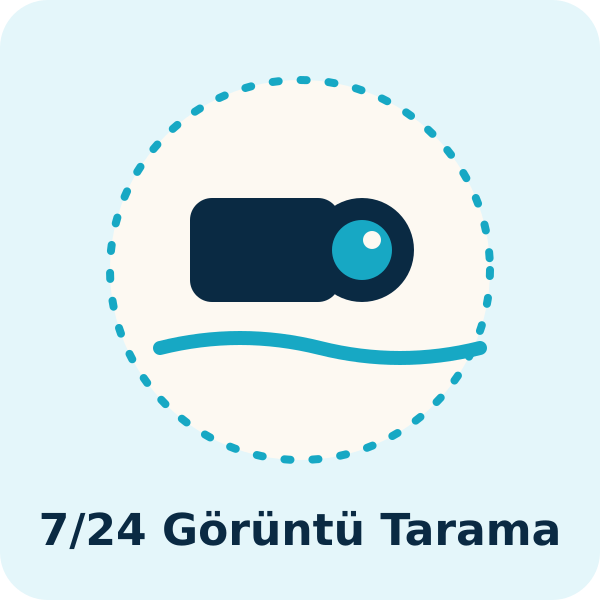
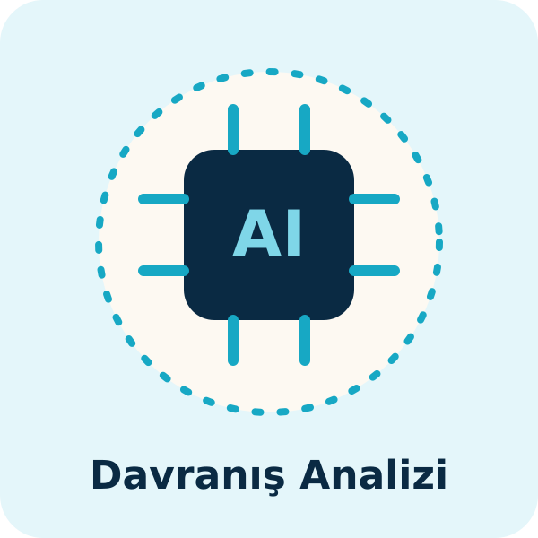
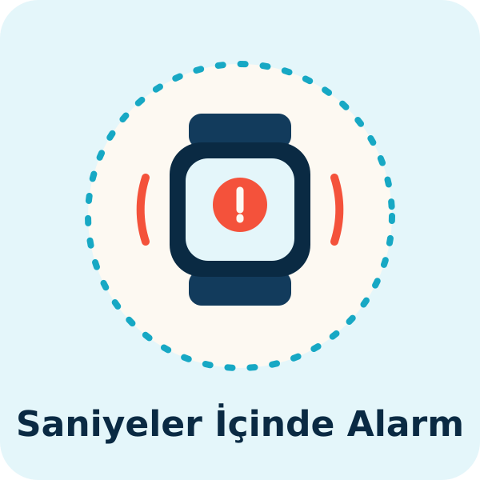
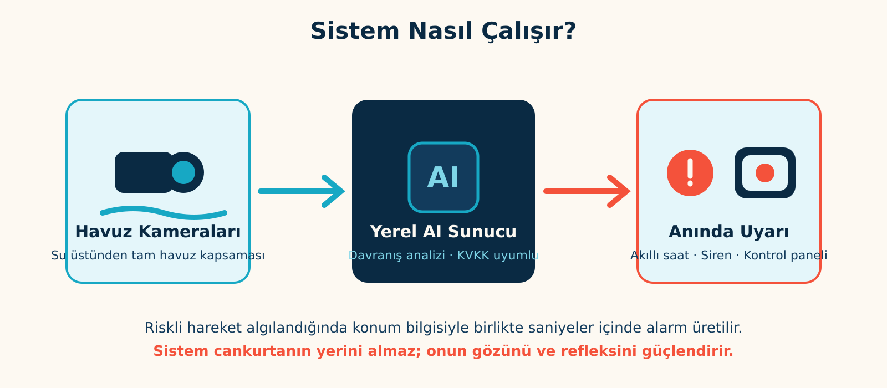
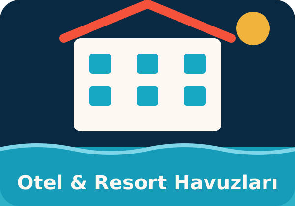
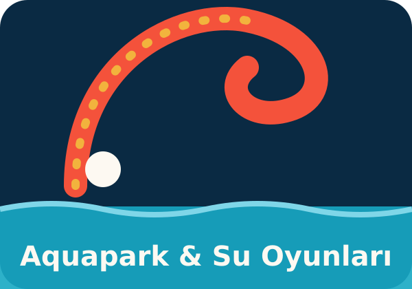
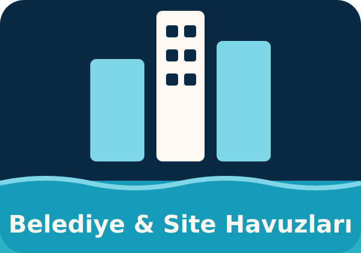
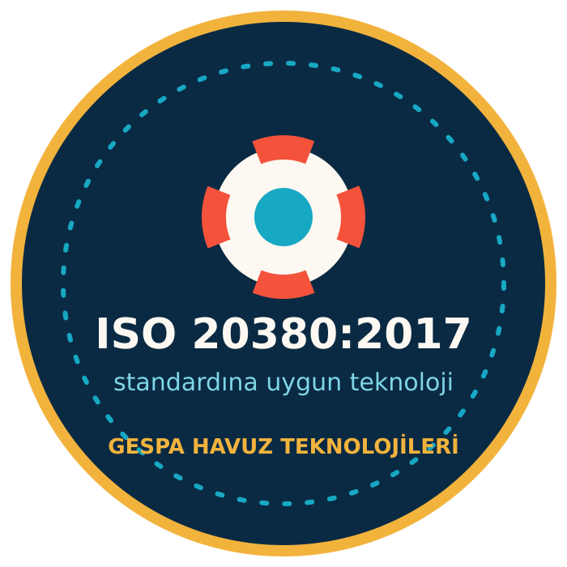

Gözetim boşluğu
Vakaların neredeyse tamamında çocuk, ebeveynin birkaç dakika uzaklaştığı ya da kalabalıkta gözden kaybolduğu anda suya girdi. Çevredeki tatilciler çoğu olayda durumu fark etmedi.
Havuzda her saniye sayılır — halka açık ve otel havuzları için azami güvenlik.
Yapay zekâ destekli kameralar havuzunuzu 7/24 tarar; riskli bir durum algılandığında cankurtaranınızın akıllı saatine ve alarm noktalarına saniyeler içinde konum bilgisiyle uyarı gönderir.
ISO 20380:2017 standardına uygun teknoloji · KVKK uyumlu yerel veri işleme

Kalabalık bir havuzdan gerçek tespit kaydı: yapay zekâ her yüzücüyü ayrı bir kutuyla işaretler, davranışını sürekli puanlar. Risk eşiği aşıldığında cankurtaranın akıllı saatine anında konumlu alarm gider.
Gerçek bir boğulma çoğu zaman çırpınma ve bağırma olmadan, 20-60 saniye içinde gerçekleşir. Kalabalık bir otel havuzunda bu, en dikkatli cankurtaranın bile gözünden kaçabilecek kadar kısa ve sessiz bir andır.
Basın taramalarına dayanan akademik bir incelemeye göre 2011–2016 arasında Türkiye'deki yüzme havuzlarında 96 kişi hayatını kaybetti. Vakalar Haziran–Temmuz aylarında yoğunlaşıyor ve mağdurların büyük bölümü çocuk.
Vakaların neredeyse tamamında çocuk, ebeveynin birkaç dakika uzaklaştığı ya da kalabalıkta gözden kaybolduğu anda suya girdi. Çevredeki tatilciler çoğu olayda durumu fark etmedi.
Mevzuat havuz metrekaresine ve kaydırak giriş-çıkışlarına göre zorunlu cankurtaran sayısı tanımlar. Vakalarda eksik personel, vardiya/öğle arası boşluğu ve kör nokta takibinin yapılmaması öne çıkan iddialar.
2026'daki dört yaşındaki çocuğun ölümü yetişkin havuzunda gerçekleşti. Çocuk ve yetişkin havuzu arasında fiziksel ayrım, bariyer ve giriş kontrolü olmaması tekrar eden bir risk faktörü.
Adli süreçlerde sorumluluk cankurtaranla sınırlı kalmıyor; genel müdür, güvenlik müdürü ve iş güvenliği uzmanı da tutuklanıyor veya kusurlu bulunuyor. Taksirle ölüme neden olma isnadı standart hâle geldi.
Yapay zekâ katmanı gözetim boşluğunu ve kör noktaları hedefler: vardiya değişiminde, öğle arasında ve kalabalık saatlerde havuz yüzeyi kesintisiz taranır, risk anında cankurtaranın saatine konumlu uyarı gider. Cankurtaranın yerine geçmez; zorunlu personel sayısını da azaltmaz — insan gözünün fizyolojik sınırını kapatır ve her uyarıyı denetlenebilir kayda dönüştürür.
Veriler kamuya açık basın kaynaklarından (Anadolu Ajansı, DHA, İHA servisli ulusal ve yerel yayınlar) ve DergiPark'ta yayımlanan 2011–2016 dönemi yüzme havuzu boğulma vakaları incelemesinden derlenmiştir. Devam eden soruşturmalarda masumiyet karinesi geçerlidir; tesis ve kişi adlarına yer verilmemiştir.

Havuzunuza konumlandırılan kameralar havuz yüzeyinin tamamını kesintisiz izler. Mevcut havuzlara, havuzu boşaltmadan kurulum mümkündür.

Sistem her yüzücüyü ayrı ayrı takip eder; hareketsizlik, dikey batış pozisyonu ve panik hareketleri gibi risk işaretlerini gerçek zamanlı analiz eder. Tüm görüntü işleme, tesis içindeki yerel sunucuda yapılır.

Risk algılandığında cankurtaranların akıllı saatlerine titreşimli uyarı, havuz başına sesli-ışıklı alarm ve kontrol paneline olayın konum görüntüsü iletilir. Cankurtaran nereye bakacağını değil, nereye atlayacağını bilir.

Bir tespit sisteminin işletmede kabul görmesi, doğru anda uyarması kadar gereksiz yere uyarmamasına bağlıdır.
Yüksek hassasiyetli Sony görüntü sensörü ile düşük ışıkta net görüş. Gece kullanımına açık havuzlar için aydınlatma değerlendirmesi keşifte yapılır.
Serbest yüzme, yüzme dersi ve yoğun saat senaryoları için ayrı tespit modları; dakika hassasiyetli zaman çizelgesiyle otomatik geçiş — yanlış alarm yönetiminin teknik temeli.
Cankurtaran görev noktası takibi ve kişi sayma istatistikleri; yönetim paneline günlük raporlama. Güvenlik performansınız ölçülebilir hâle gelir.
Misafir güvenliği itibardır — ve ölçülebilir bir standarttır.

Sistem, sigorta ve risk yönetimi süreçlerinize belgelenebilir bir güvenlik katmanı ekler; her uyarı kayıt altına alınır.

Kaydırak inişleri, dalga havuzları ve yoğun çocuk trafiği — insan gözünün en çok zorlandığı yerde sistem hiç yorulmaz.

Yüksek ziyaretçi sirkülasyonu olan tesislerde denetim ve raporlama kolaylığı; toplu kullanımda ölçülebilir güvenlik standardı.
Gespa Enerji, Antalya merkezli enerji teknolojileri firmasıdır. Otellere güneş enerjisi ve ısıtma çözümleri sunan ekibimiz, şimdi aynı mühendislik disiplinini havuz güvenliğine taşıyor. Uluslararası boğulma tespit sistemi üreticileriyle distribütörlük ve yetkili servis süreçlerimiz yürütülmektedir; tüm kurulumlar sertifikalı ekiplerce yapılır ve yerinde kabul testleriyle teslim edilir.

Sistem donanımı akredite laboratuvarlarda test edilmiştir. Aşağıdaki belge numaralarıyla raporların kaynağı doğrulanabilir.
Telsiz ekipmanları direktifi uygunluğu.
Belge No: CTW2510004501 · Test Lab: CNAS akredite (L1225), ilac-MRA üyesiElektromanyetik alan (EMF) maruziyet değerlendirmesi.
Rapor No: CHTW25100048 · Sonuç: Geçti (Pass)Ses/görüntü ve bilgi teknolojisi ekipmanları elektriksel güvenliği.
Rapor No: CHTE25100104Yüzme havuzlarında bilgisayarlı görü ile boğulma tespiti — sistem bu standardın tanımladığı ikincil gözetim katmanı olarak konumlanır.
Uyumlu teknolojiGörüntüler tesis içindeki yerel sunucuda işlenir; buluta veya yurt dışına aktarılmaz.
Aydınlatma metni ve kayıt politikası kurulumla birlikte teslim edilirBelgelerin kopyaları talep üzerine kurumsal olarak paylaşılır.
Sistemi dilerseniz tek seferlik anahtar teslim yatırım olarak, dilerseniz Aylık Güvenlik Hizmeti modeliyle edinebilirsiniz: kurulum bedeli sonrası aylık sabit hizmet ücretiyle donanım, yazılım, bakım ve destek tek pakette. Aylık 299 USD'den başlayan planlarla, bir sezonluk ek personel maliyetinin çok altında 7/24 teknolojik gözetim.
Hayır — ve geçmemeli. Uluslararası ISO 20380 standardı da bu sistemleri cankurtaranı destekleyen ikincil gözetim katmanı olarak tanımlar. Sistem, cankurtaranınızın görüş alanını ve tepki hızını büyütür.
Evet. Çoğu projede havuz boşaltılmadan, işletme aksatılmadan kurulum yapılabilir. Kesin yöntem ücretsiz keşifte belirlenir.
Hiçbir sistem sıfır yanlış alarm vaat edemez; kaliteli sistemler bunu günde birkaç uyarı seviyesinde tutacak şekilde tasarlanır ve her tesiste kalibre edilir. Her uyarı, kayıt ve rapor olarak saklanır.
Görüntüler tesis içindeki sunucuda işlenir, buluta veya yurt dışına aktarılmaz. Kayıt politikası KVKK'ya uygun şekilde, yalnızca olay anlarını saklayacak biçimde yapılandırılır ve tesis girişlerinde aydınlatma metni yer alır.
Havuz sayısı, boyutu ve kamera altyapısına göre değişir. Ücretsiz keşif sonrası, kiralama ve taksit seçenekleriyle birlikte yazılı teklif sunarız.
Evet. Kurulum bedeli sonrası aylık sabit hizmet planları sunuyoruz; donanım, yazılım, bakım ve destek tek pakette. Aylık 299 USD'den başlayan planlarla, 36 aya varan ödeme seçenekleri mevcuttur.
CE/RED test raporlarımız akredite laboratuvar numaralıdır; belge numaraları bu sayfadaki Belgelendirme bölümünde açıkça yer alır. Rapor kopyaları kurumsal talep üzerine e-postayla paylaşılır.
Formu doldurun; ekibimiz 1 iş günü içinde sizi arasın.
Önemli bilgilendirme: AI Cankurtaran Destek Sistemi, cankurtaran gözetiminin yerine geçmez; onu destekleyen ek bir güvenlik katmanıdır. Hiçbir teknolojik sistem tüm boğulma vakalarını tespit etmeyi garanti edemez. Sistem, ilgili mevzuat kapsamındaki cankurtaran bulundurma yükümlülüklerini ortadan kaldırmaz. Ürün özellikleri, kurulan sistem konfigürasyonuna göre değişiklik gösterebilir.